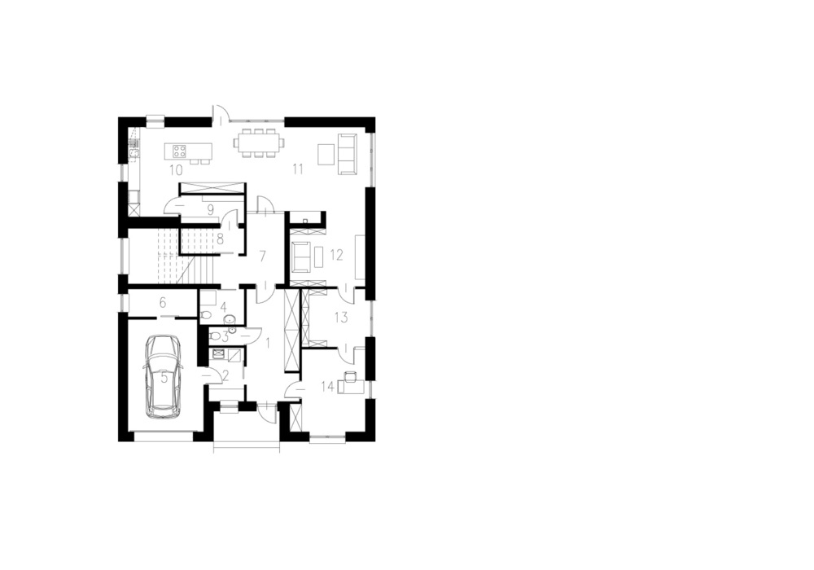
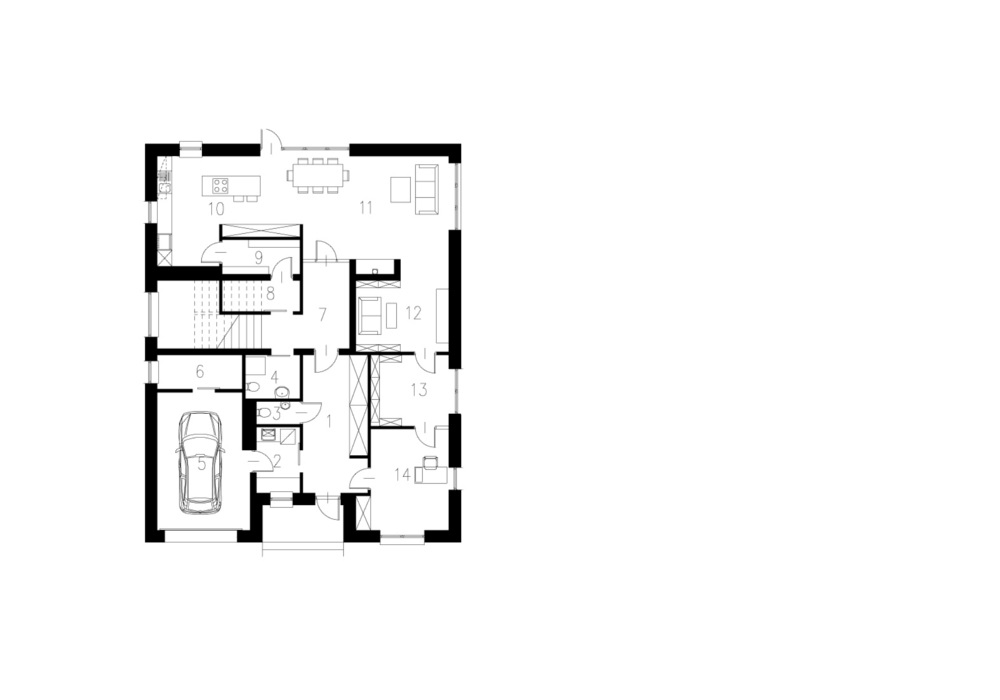

Budynek wielorodzinny / Multi-family Residential
Budynek o trzech kondygnacjach naziemnych o funkcji mieszkalnej oraz jednej kondygnacji podziemnej mieszczącej garaż, pomieszczenia techniczne i pomieszczenia dla rekreacji mieszkańców. Budynek stanowi zwartą bryłę na planie prostokąta.Elementem charakterystycznych wszystkich elewacji są głębokie loggie o zróżnicowanych wymiarach ze ścianami oraz balustradami pełnymi wykończonymi okładzinami ściennymi z lekkich płyt elewacyjnych imitujących drewno.
Building with three storeys with a residential function and underground garage, technical and fitness rooms. It is a compact block on a rectangular plan. The characteristic element of all elevations are deep loggias of different dimensions, with walls and balustrades with finish of light wood facade boards
- Lokalizacja / Location
- Bydgoszcz, Polska / Bydgoszcz, Poland
- Inwestor / Client
- EBUD-TBS
- Zespół projektowy / Project team
- Tomasz Słoniowski
- Sylwia Sopińska
- Agata Polkowska
- Etap projektu / Project stage
- Konkurs architektoniczny / Architectural design competition
- Data / Date
- 2015
 
